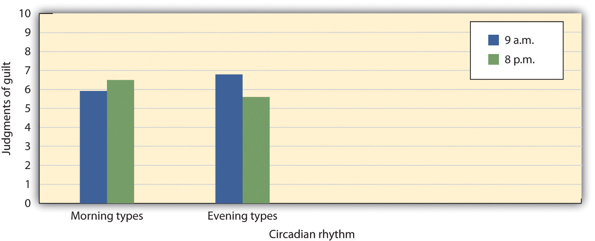
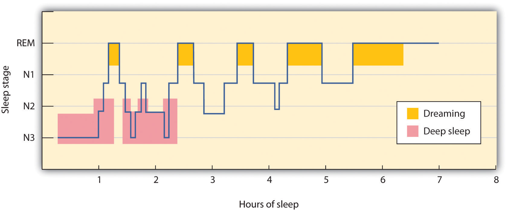
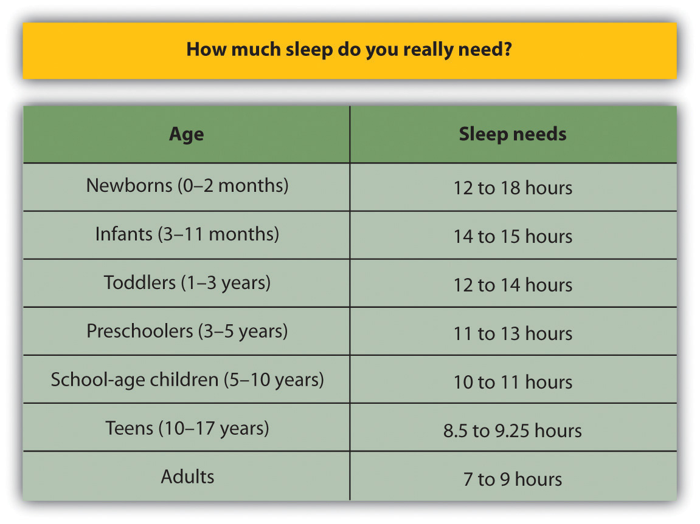
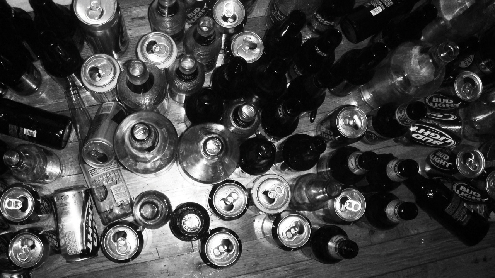
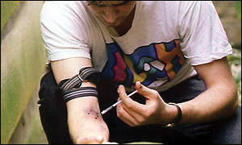

During the night of May 23, 1987, Kenneth Parks, a 23-year old Canadian with a wife, a baby daughter, and heavy gambling debts, got out of his bed, climbed into his car, and drove 15 miles to the home of his wife’s parents in the suburbs of Toronto. There, he attacked them with a knife, killing his mother-in-law and severely injuring his father-in-law. Parks then drove to a police station and stumbled into the building, holding up his bloody hands and saying, “I think I killed some people…my hands.” The police arrested him and took him to a hospital, where surgeons repaired several deep cuts on his hands. Only then did police discover that he had indeed assaulted his in-laws.
Parks claimed that he could not remember anything about the crime. He said that he remembered going to sleep in his bed, then awakening in the police station with bloody hands, but nothing in between. His defense was that he had been asleep during the entire incident and was not aware of his actions (Martin, 2009).Martin, L. (2009). Can sleepwalking be a murder defense? Sleep Disorders: For Patients and Their Families. Retrieved from http://www.lakesidepress.com/pulmonary/Sleep/sleep-murder.htm
Not surprisingly, no one believed this explanation at first. However, further investigation established that he did have a long history of sleepwalking, he had no motive for the crime, and despite repeated attempts to trip him up in numerous interviews, he was completely consistent in his story, which also fit the timeline of events. Parks was examined by a team of sleep specialists, who found that the pattern of brain waves that occurred while he slept was very abnormal (Broughton, Billings, Cartwright, & Doucette, 1994).Broughton, R. J., Billings, R., Cartwright, R., & Doucette, D. (1994). Homicidal somnambulism: A case report. Sleep: Journal of Sleep Research & Sleep Medicine, 17(3), 253–264. The specialists eventually concluded that sleepwalking, probably precipitated by stress and anxiety over his financial troubles, was the most likely explanation of his aberrant behavior. They also agreed that such a combination of stressors was unlikely to happen again, so he was not likely to undergo another such violent episode and was probably not a hazard to others. Given this combination of evidence, the jury acquitted Parks of murder and assault charges. He walked out of the courtroom a free man (Wilson, 1998).Wilson, C. (1998). The mammoth book of true crime. New York, NY: Robinson Publishing.
ConsciousnessThe subjective awareness of ourselves and our environment. is defined as our subjective awareness of ourselves and our environment (Koch, 2004).Koch, C. (2004). The quest for consciousness: A neurobiological approach. Englewood, CO: Roberts & Co. The experience of consciousness is fundamental to human nature. We all know what it means to be conscious, and we assume (although we can never be sure) that other human beings experience their consciousness similarly to how we experience ours.
The study of consciousness has long been important to psychologists and plays a role in many important psychological theories. For instance, Sigmund Freud’s personality theories differentiated between the unconscious and the conscious aspects of behavior, and present-day psychologists distinguish between automatic (unconscious) and controlled (conscious) behaviors and between implicit (unconscious) and explicit (conscious) memory (Petty, Wegener, Chaiken, & Trope, 1999; Shanks, 2005).Petty, R., Wegener, D., Chaiken, S., & Trope, Y. (1999). Dual-process theories in social psychology. New York, NY: Guilford Press; Shanks, D. (2005). Implicit learning. In K. Lamberts (Ed.), Handbook of cognition (pp. 202–220). London, England: Sage.
Some philosophers and religious practices argue that the mind (or soul) and the body are separate entities. For instance, the French philosopher René Descartes (1596–1650) was a proponent of dualism, the idea that the mind, a nonmaterial entity, is separate from (although connected to) the physical body. In contrast to the dualists, psychologists believe that consciousness (and thus the mind) exists in the brain, not separate from it. In fact, psychologists believe that consciousness is the result of the activity of the many neural connections in the brain, and that we experience different states of consciousness depending on what our brain is currently doing (Dennett, 1991; Koch & Greenfield, 2007).Dennett, D. C. (1991). Consciousness explained. Boston, MA: Little, Brown and Company; Koch, C., & Greenfield, S. (2007). How does consciousness happen? Scientific American, 76–83.
Figure 5.1
The French philosopher René Descartes (1596–1650) was a proponent of dualism, the theory that the mind and body are two separate entities. Psychologists reject this idea, however, believing that consciousness is a result of activity in the brain, not separate from it.
Source: Photo courtesy of André Hatala, http://commons.wikimedia.org/wiki/File:Frans_Hals_-_Portret_van_René_Descartes.jpg.
The study of consciousness is also important to the fundamental psychological question regarding the presence of free will. Although we may understand and believe that some of our behaviors are caused by forces that are outside our awareness (i.e., unconscious), we nevertheless believe that we have control over, and are aware that we are engaging in, most of our behaviors. To discover that we, or even someone else, has engaged in a complex behavior, such as driving in a car and causing severe harm to others, without being at all conscious of one’s actions, is so unusual as to be shocking. And yet psychologists are increasingly certain that a great deal of our behavior is caused by processes of which we are unaware and over which we have little or no control (Libet, 1999; Wegner, 2003).Libet, B. (1999). Do we have free will? Journal of Consciousness Studies, 6, 8(9), 47–57; Wegner, D. M. (2003). The mind’s best trick: How we experience conscious will. Trends in Cognitive Sciences, 7(2), 65–69.
Our experience of consciousness is functional because we use it to guide and control our behavior, and to think logically about problems (DeWall, Baumeister, & Masicampo, 2008).DeWall, C., Baumeister, R., & Masicampo, E. (2008). Evidence that logical reasoning depends on conscious processing. Consciousness and Cognition, 17(3), 628. Consciousness allows us to plan activities and to monitor our progress toward the goals we set for ourselves. And consciousness is fundamental to our sense of morality—we believe that we have the free will to perform moral actions while avoiding immoral behaviors.
But in some cases consciousness may become aversive, for instance when we become aware that we are not living up to our own goals or expectations, or when we believe that other people perceive us negatively. In these cases we may engage in behaviors that help us escape from consciousness, for example through the use of alcohol or other psychoactive drugs (Baumeister, 1998).Baumeister, R. (1998). The self. In The handbook of social psychology (4th ed., Vol. 2, pp. 680–740). New York, NY: McGraw-Hill.
Because the brain varies in its current level and type of activity, consciousness is transitory. If we drink too much coffee or beer, the caffeine or alcohol influences the activity in our brain, and our consciousness may change. When we are anesthetized before an operation or experience a concussion after a knock on the head, we may lose consciousness entirely as a result of changes in brain activity. We also lose consciousness when we sleep, and it is with this altered state of consciousness that we begin our chapter.
The lives of all organisms, including humans, are influenced by regularly occurring cycles of behaviors known as biological rhythmsRegularly occurring cycles of behaviors caused by biological factors.. One important biological rhythm is the annual cycle that guides the migration of birds and the hibernation of bears. Women also experience a 28-day cycle that guides their fertility and menstruation. But perhaps the strongest and most important biorhythm is the daily circadian rhythmThe biological cycle that guides the daily waking and sleeping in many animals. (from the Latin circa, meaning “about” or “approximately,” and dian, meaning “daily”) that guides the daily waking and sleeping cycle in many animals.
Many biological rhythms are coordinated by changes in the level and duration of ambient light, for instance, as winter turns into summer and as night turns into day. In some animals, such as birds, the pineal gland in the brain is directly sensitive to light and its activation influences behavior, such as mating and annual migrations. Light also has a profound effect on humans. We are more likely to experience depression during the dark winter months than during the lighter summer months, an experience known as seasonal affective disorder (SAD), and exposure to bright lights can help reduce this depression (McGinnis, 2007).McGinniss, P. (2007). Seasonal affective disorder (SAD)—Treatment and drugs. Mayo Clinic. Retrieved from http://www.mayoclinic.com/health/seasonal-affective-disorder/DS00195/DSECTION=treatments%2Dand%2Ddrugs
Sleep is also influenced by ambient light. The ganglion cells in the retina send signals to a brain area above the thalamus called the suprachiasmatic nucleus, which is the body’s primary circadian “pacemaker.” The suprachiasmatic nucleus analyzes the strength and duration of the light stimulus and sends signals to the pineal gland when the ambient light level is low or its duration is short. In response, the pineal gland secretes melatonin, a powerful hormone that facilitates the onset of sleep.
The circadian rhythm influences our energy levels such that we have more energy at some times of day than others. Galen Bodenhausen (1990)Bodenhausen, G. V. (1990). Stereotypes as judgmental heuristics: Evidence of circadian variations in discrimination. Psychological Science, 1, 319–322. argued that people may be more likely to rely on their stereotypes (i.e., their beliefs about the characteristics of social groups) as a shortcut to making social judgments when they are tired than when they have more energy. To test this hypothesis, he asked 189 research participants to consider cases of alleged misbehavior by other college students and to judge the probability of the accused students’ guilt. The accused students were identified as members of particular social groups, and they were accused of committing offenses that were consistent with stereotypes of these groups.
One case involved a student athlete accused of cheating on an exam, one case involved a Hispanic student who allegedly physically attacked his roommate, and a third case involved an African American student who had been accused of selling illegal drugs. Each of these offenses had been judged via pretesting in the same student population to be stereotypically (although, of course, unfairly) associated with each social group. The research participants were also provided with some specific evidence about the case that made it ambiguous whether the person had actually committed the crime, and then asked to indicate the likelihood of the student’s guilt on an 11-point scale (0 = extremely unlikely to 10 = extremely likely).
Participants also completed a measure designed to assess their circadian rhythms—whether they were more active and alert in the morning (Morning types) or in the evening (Evening types). The participants were then tested at experimental sessions held either in the morning (9 a.m.) or in the evening (8 p.m.). As you can see in Figure 5.2 "Circadian Rhythms and Stereotyping", the participants were more likely to rely on their negative stereotypes of the person they were judging at the time of day in which they reported being less active and alert. Morning people used their stereotypes more when they were tested in the evening, and evening people used their stereotypes more when they were tested in the morning.
Figure 5.2 Circadian Rhythms and Stereotyping
Students who indicated that they had more energy in the morning relied on their stereotypes more at night, and students who indicated that they had more energy in the night relied on their stereotypes more in the morning.
Source: Adapted from Bodenhausen, G. V. (1990). Stereotypes as judgmental heuristics: Evidence of circadian variations in discrimination. Psychological Science, 1, 319–322.
Although we lose consciousness as we sleep, the brain nevertheless remains active. The patterns of sleep have been tracked in thousands of research participants who have spent nights sleeping in research labs while their brain waves were recorded by monitors, such as an electroencephalogram, or EEG (Figure 5.3 "Sleep Labs").
Figure 5.3 Sleep Labs
Sleep researchers measure the activity of the brain, eyes, face, and other parts of the body while the participant sleeps.
Source: Photo courtesy of Stephens County Hospital, http://www.stephenscountyhospital.com/services/sleep_lab.htm.
Sleep researchers have found that sleeping people undergo a fairly consistent pattern of sleep stages, each lasting about 90 minutes. As you can see in Figure 5.4 "Stages of Sleep", these stages are of two major types: Rapid eye movement (REM) sleepA sleep stage characterized by the presence of fast eye movements and dreaming. is a sleep stage characterized by the presence of quick fast eye movements and dreaming. REM sleep accounts for about 25% of our total sleep time. During REM sleep, our awareness of external events is dramatically reduced, and consciousness is dominated primarily by internally generated images and a lack of overt thinking (Hobson, 2004).Hobson, A. (2004). A model for madness? Dream consciousness: Our understanding of the neurobiology of sleep offers insight into abnormalities in the waking brain. Nature, 430, 69–95. During this sleep stage our muscles shut down, and this is probably a good thing as it protects us from hurting ourselves or trying to act out the scenes that are playing in our dreams. The second major sleep type, non-rapid eye movement (non-REM) sleepA deep sleep, characterized by very slow brain waves, which is further subdivided into three substages, labeled as stages N1, N2, and N3. is a deep sleep, characterized by very slow brain waves, that is further subdivided into three stages: N1, N2, and N3. Each of the sleep stages has its own distinct pattern of brain activity (Dement & Kleitman, 1957).Dement, W., & Kleitman, N. (1957). Cyclic variations in EEG during sleep. Electroencephalography & Clinical Neurophysiology, 9, 673–690.
Figure 5.4 Stages of Sleep
During a typical night, our sleep cycles move between REM and non-REM sleep, with each cycle repeating at about 90-minute intervals. The deeper non-REM sleep stages usually occur earlier in the night.
As you can see in Figure 5.5 "EEG Recordings of Brain Patterns During Sleep", the brain waves that are recorded by an EEG as we sleep show that the brain’s activity changes during each stage of sleeping. When we are awake, our brain activity is characterized by the presence of very fast beta waves. When we first begin to fall asleep, the waves get longer (alpha waves), and as we move into stage N1 sleep, which is characterized by the experience of drowsiness, the brain begins to produce even slower theta waves. During stage N1 sleep, some muscle tone is lost, as well as most awareness of the environment. Some people may experience sudden jerks or twitches and even vivid hallucinations during this initial stage of sleep.
Figure 5.5 EEG Recordings of Brain Patterns During Sleep

Each stage of sleep has its own distinct pattern of brain activity.
Normally, if we are allowed to keep sleeping, we will move from stage N1 to stage N2 sleep. During stage N2, muscular activity is further decreased and conscious awareness of the environment is lost. This stage typically represents about half of the total sleep time in normal adults. Stage N2 sleep is characterized by theta waves interspersed with bursts of rapid brain activity known as sleep spindles.
Stage N3, also known as slow wave sleep, is the deepest level of sleep, characterized by an increased proportion of very slow delta waves. This is the stage in which most sleep abnormalities, such as sleepwalking, sleeptalking, nightmares, and bed-wetting occur. The sleepwalking murders committed by Mr. Parks would have occurred in this stage. Some skeletal muscle tone remains, making it possible for affected individuals to rise from their beds and engage in sometimes very complex behaviors, but consciousness is distant. Even in the deepest sleep, however, we are still aware of the external world. If smoke enters the room or if we hear the cry of a baby we are likely to react, even though we are sound asleep. These occurrences again demonstrate the extent to which we process information outside consciousness.
After falling initially into a very deep sleep, the brain begins to become more active again, and we normally move into the first period of REM sleep about 90 minutes after falling asleep. REM sleep is accompanied by an increase in heart rate, facial twitches, and the repeated rapid eye movements that give this stage its name. People who are awakened during REM sleep almost always report that they were dreaming, while those awakened in other stages of sleep report dreams much less often. REM sleep is also emotional sleep. Activity in the limbic system, including the amygdala, is increased during REM sleep, and the genitals become aroused, even if the content of the dreams we are having is not sexual. A typical 25-year-old man may have an erection nearly half of the night, and the common “morning erection” is left over from the last REM period before waking.
Normally we will go through several cycles of REM and non-REM sleep each night (Figure 5.5 "EEG Recordings of Brain Patterns During Sleep"). The length of the REM portion of the cycle tends to increase through the night, from about 5 to 10 minutes early in the night to 15 to 20 minutes shortly before awakening in the morning. Dreams also tend to become more elaborate and vivid as the night goes on. Eventually, as the sleep cycle finishes, the brain resumes its faster alpha and beta waves and we awake, normally refreshed.
According to a recent poll (National Sleep Foundation, 2009),National Sleep Foundation. (2009). Sleep in America Poll. Washington, DC: Author. Retrieved from http://www.sleepfoundation.org/sites/default/files/2009%20Sleep%20in%20America%20SOF%20EMBARGOED.pdf about one-fourth of American adults say they get a good night’s sleep only a few nights a month or less. These people are suffering from a sleep disorder known as insomniaA sleep disorder that involves persistent difficulty falling or staying asleep., defined as persistent difficulty falling or staying asleep. Most cases of insomnia are temporary, lasting from a few days to several weeks, but in some cases insomnia can last for years.
Insomnia can result from physical disorders such as pain due to injury or illness, or from psychological problems such as stress, financial worries, or relationship difficulties. Changes in sleep patterns, such as jet lag, changes in work shift, or even the movement to or from daylight savings time can produce insomnia. Sometimes the sleep that the insomniac does get is disturbed and nonrestorative, and the lack of quality sleep produces impairment of functioning during the day. Ironically, the problem may be compounded by people’s anxiety over insomnia itself: Their fear of being unable to sleep may wind up keeping them awake. Some people may also develop a conditioned anxiety to the bedroom or the bed.
People who have difficulty sleeping may turn to drugs to help them sleep. Barbiturates, benzodiazepines, and other sedatives are frequently marketed and prescribed as sleep aids, but they may interrupt the natural stages of the sleep cycle, and in the end are likely to do more harm than good. In some cases they may also promote dependence. Most practitioners of sleep medicine today recommend making environmental and scheduling changes first, followed by therapy for underlying problems, with pharmacological remedies used only as a last resort.
According to the National Sleep Foundation, some steps that can be used to combat insomnia include the following:
Another common sleep problem is sleep apneaA sleep disorder characterized by pauses in breathing that last at least 10 seconds during sleep., a sleep disorder characterized by pauses in breathing that last at least 10 seconds during sleep (Morgenthaler, Kagramanov, Hanak, & Decker, 2006).Morgenthaler, T. I., Kagramanov, V., Hanak, V., & Decker, P. A. (2006). Complex sleep apnea syndrome: Is it a unique clinical syndrome? Sleep, 29(9), 1203–1209. Retrieved from http://www.journalsleep.org/ViewAbstract.aspx?pid=26630 In addition to preventing restorative sleep, sleep apnea can also cause high blood pressure and may raise the risk of stroke and heart attack (Yaggi et al., 2005).Yaggi, H. K., Concato, J., Kernan, W. N., Lichtman, J. H., Brass, L. M., & Mohsenin, V. (2005). Obstructive sleep apnea as a risk factor for stroke and death. The New England Journal of Medicine, 353(19), 2034–2041. doi:10.1056/NEJMoa043104
Most sleep apnea is caused by an obstruction of the walls of the throat that occurs when we fall asleep. It is most common in obese or older individuals who have lost muscle tone and is particularly common in men. Sleep apnea caused by obstructions is usually treated with an air machine that uses a mask to create a continuous pressure that prevents the airway from collapsing, or with mouthpieces that keep the airway open. If all other treatments have failed, sleep apnea may be treated with surgery to open the airway.
NarcolepsyA disorder characterized by extreme daytime sleepiness with frequent episodes of “nodding off.” is a disorder characterized by extreme daytime sleepiness with frequent episodes of “nodding off.” The syndrome may also be accompanied by attacks of cataplexy, in which the individual loses muscle tone, resulting in a partial or complete collapse. It is estimated that at least 200,000 Americans suffer from narcolepsy, although only about a quarter of these people have been diagnosed (National Heart, Lung, and Blood Institute, 2008).National Heart, Lung, and Blood Institute. (2008). Who is at risk for narcolepsy? Retrieved from http://www.nhlbi.nih.gov/health/dci/Diseases/nar/nar_who.html
Narcolepsy is in part the result of genetics—people who suffer from the disease lack neurotransmitters that are important in keeping us alert (Taheri, Zeitzer, & Mignot, 2002)Taheri, S., Zeitzer, J. M., & Mignot, E. (2002). The role of hypocretins (Orexins) in sleep regulation and narcolepsy. Annual Review of Neuroscience, 25, 283–313.—and is also the result of a lack of deep sleep. While most people descend through the sequence of sleep stages, then move back up to REM sleep soon after falling asleep, narcolepsy sufferers move directly into REM and undergo numerous awakenings during the night, often preventing them from getting good sleep.
Narcolepsy can be treated with stimulants, such as amphetamines, to counteract the daytime sleepiness, or with antidepressants to treat a presumed underlying depression. However, since these drugs further disrupt already-abnormal sleep cycles, these approaches may, in the long run, make the problem worse. Many sufferers find relief by taking a number of planned short naps during the day, and some individuals may find it easier to work in jobs that allow them to sleep during the day and work at night.
Other sleep disorders occur when cognitive or motor processes that should be turned off or reduced in magnitude during sleep operate at higher than normal levels (Mahowald & Schenck, 2000).Mahowald, M., & Schenck, C. (2000). REM sleep parasomnias. Principles and Practice of Sleep Medicine, 724–741. One example is somnamulism (sleepwalking), in which the person leaves the bed and moves around while still asleep. Sleepwalking is more common in childhood, with the most frequent occurrences around the age of 12 years. About 4% of adults experience somnambulism (Mahowald & Schenck, 2000).Mahowald, M., & Schenck, C. (2000). REM sleep parasomnias. Principles and Practice of Sleep Medicine, 724–741.
Sleep terrors is a disruptive sleep disorder, most frequently experienced in childhood, that may involve loud screams and intense panic. The sufferer cannot wake from sleep even though he or she is trying to. In extreme cases, sleep terrors may result in bodily harm or property damage as the sufferer moves about abruptly. Up to 3% of adults suffer from sleep terrors, which typically occur in sleep stage N3 (Mahowald & Schenck, 2000).Mahowald, M., & Schenck, C. (2000). REM sleep parasomnias. Principles and Practice of Sleep Medicine, 724–741.
Other sleep disorders include bruxism, in which the sufferer grinds his teeth during sleep; restless legs syndrome, in which the sufferer reports an itching, burning, or otherwise uncomfortable feeling in his legs, usually exacerbated when resting or asleep; and periodic limb movement disorder, which involves sudden involuntary movement of limbs. The latter can cause sleep disruption and injury for both the sufferer and bed partner.
Although many sleep disorders occur during non-REM sleep, REM sleep behavior disorder (Mahowald & Schenck, 2005)Mahowald, M., & Schenck, C. (2005). REM sleep behavior disorder. Handbook of Clinical Neurophysiology, 6, 245–253. is a condition in which people (usually middle-aged or older men) engage in vigorous and bizarre physical activities during REM sleep in response to intense, violent dreams. As their actions may injure themselves or their sleeping partners, this disorder, thought to be neurological in nature, is normally treated with hypnosis and medications.
Our preferred sleep times and our sleep requirements vary throughout our life cycle. Newborns tend to sleep between 16 and 18 hours per day, preschoolers tend to sleep between 10 and 12 hours per day, school-aged children and teenagers usually prefer at least 9 hours of sleep per night, and most adults say that they require 7 to 8 hours per night (Mercer, Merritt, & Cowell, 1998; National Sleep Foundation, 2008).Mercer, P., Merritt, S., & Cowell, J. (1998). Differences in reported sleep need among adolescents. Journal of Adolescent Health, 23(5), 259–263; National Sleep Foundation. (2008). Sleep in America Poll. Washington, DC: Author. Retrieved from http://www.sleepfoundation.org/sites/default/files/2008%20POLL%20SOF.PDF There are also individual differences in need for sleep. Some people do quite well with fewer than 6 hours of sleep per night, whereas others need 9 hours or more. The most recent study by the National Sleep Foundation suggests that adults should get between 7 and 9 hours of sleep per night (Figure 5.8 "Average Hours of Required Sleep per Night"), and yet Americans now average fewer than 7 hours.
Figure 5.8 Average Hours of Required Sleep per Night
The average U.S. adult reported getting only 6.7 hours of sleep per night, which is less than the recommended range propose by the National Sleep Foundation.
Source: Adapted from National Sleep Foundation. (2008). Sleep in America Poll. Washington, DC: Author. Retrieved from http://www.sleepfoundation.org/sites/default/files/2008%20POLL%20SOF.PDF.
Getting needed rest is difficult in part because school and work schedules still follow the early-to-rise timetable that was set years ago. We tend to stay up late to enjoy activities in the evening but then are forced to get up early to go to work or school. The situation is particularly bad for college students, who are likely to combine a heavy academic schedule with an active social life and who may, in some cases, also work. Getting enough sleep is a luxury that many of us seem to be unable or unwilling to afford, and yet sleeping is one of the most important things we can do for ourselves. Continued over time, a nightly deficit of even only 1 or 2 hours can have a substantial impact on mood and performance.
Sleep has a vital restorative function, and a prolonged lack of sleep results in increased anxiety, diminished performance, and, if severe and extended, may even result in death. Many road accidents involve sleep deprivation, and people who are sleep deprived show decrements in driving performance similar to those who have ingested alcohol (Hack, Choi, Vijayapalan, Davies, & Stradling, 2001; Williamson & Feyer, 2000).Hack, M. A., Choi, S. J., Vijayapalan, P., Davies, R. J. O., & Stradling, J. R. S. (2001). Comparison of the effects of sleep deprivation, alcohol and obstructive sleep apnoea (OSA) on simulated steering performance. Respiratory medicine, 95(7), 594–601; Williamson, A., & Feyer, A. (2000). Moderate sleep deprivation produces impairments in cognitive and motor performance equivalent to legally prescribed levels of alcohol intoxication. Occupational and Environmental Medicine, 57(10), 649. Poor treatment by doctors (Smith-Coggins, Rosekind, Hurd, & Buccino, 1994)Smith-Coggins, R., Rosekind, M. R., Hurd, S., & Buccino, K. R. (1994). Relationship of day versus night sleep to physician performance and mood. Annals of Emergency Medicine, 24(5), 928–934. and a variety of industrial accidents have also been traced in part to the effects of sleep deprivation.
Good sleep is also important to our health and longevity. It is no surprise that we sleep more when we are sick, because sleep works to fight infection. Sleep deprivation suppresses immune responses that fight off infection, and can lead to obesity, hypertension, and memory impairment (Ferrie et al., 2007; Kushida, 2005).Ferrie, J. E., Shipley, M. J., Cappuccio, F. P., Brunner, E., Miller, M. A., Kumari, M., & Marmot, M. G. (2007). A prospective study of change in sleep duration: Associations with mortality in the Whitehall II cohort. Sleep, 30(12), 1659; Kushida, C. (2005). Sleep deprivation: basic science, physiology, and behavior. London, England: Informa Healthcare. Sleeping well can even save our lives. Dew et al. (2003)Dew, M. A., Hoch, C. C., Buysse, D. J., Monk, T. H., Begley, A. E., Houck, P. R.,…Reynolds, C. F., III. (2003). Healthy older adults’ sleep predicts all-cause mortality at 4 to 19 years of follow-up. Psychosomatic Medicine, 65(1), 63–73. found that older adults who had better sleep patterns also lived longer.
Figure 5.9 The Effects of Sleep Deprivation

In 1964, 17-year-old high school student Randy Gardner remained awake for 264 hours (11 days) in order to set a new Guinness World Record. At the request of his worried parents, he was monitored by a U.S. Navy psychiatrist, Lt. Cmdr. John J. Ross. This chart maps the progression of his behavioral changes over the 11 days.
Source: Adapted from Ross, J. J. (1965). Neurological findings after prolonged sleep deprivation. Archives of Neurology, 12, 399–403.
DreamsThe succession of images, thoughts, sounds, and emotions that passes through our minds while sleeping. are the succession of images, thoughts, sounds, and emotions that passes through our minds while sleeping. When people are awakened from REM sleep, they normally report that they have been dreaming, suggesting that people normally dream several times a night but that most dreams are forgotten on awakening (Dement, 1997).Dement, W. (1997) What all undergraduates should know about how their sleeping lives affect their waking lives. Sleepless at Stanford. Retrieved from http://www.Stanford.edu/~dement/sleepless.html The content of our dreams generally relates to our everyday experiences and concerns, and frequently our fears and failures (Cartwright, Agargun, Kirkby, & Friedman, 2006; Domhoff, Meyer-Gomes, & Schredl, 2005).Cartwright, R., Agargun, M., Kirkby, J., & Friedman, J. (2006). Relation of dreams to waking concerns. Psychiatry Research, 141(3), 261–270; Domhoff, G. W., Meyer-Gomes, K., & Schredl, M. (2005). Dreams as the expression of conceptions and concerns: A comparison of German and American college students. Imagination, Cognition and Personality, 25(3), 269–282.
Many cultures regard dreams as having great significance for the dreamer, either by revealing something important about the dreamer’s present circumstances or predicting his future. The Austrian psychologist Sigmund Freud (1913/1988) Freud, S., & Classics of Medicine Library. (1988). The interpretation of dreams (Special ed.). Birmingham, AL: The Classics of Medicine Library. (Original work published 1913) analyzed the dreams of his patients to help him understand their unconscious needs and desires, and psychotherapists still make use of this technique today. Freud believed that the primary function of dreams was wish fulfillment, or the idea that dreaming allows us to act out the desires that we must repress during the day. He differentiated between the manifest content of the dream (i.e., its literal actions) and its latent content (i.e., the hidden psychological meaning of the dream). Freud believed that the real meaning of dreams is often suppressed by the unconscious mind in order to protect the individual from thoughts and feelings that are hard to cope with. By uncovering the real meaning of dreams through psychoanalysis, Freud believed that people could better understand their problems and resolve the issues that create difficulties in their lives.
Although Freud and others have focused on the meaning of dreams, other theories about the causes of dreams are less concerned with their content. One possibility is that we dream primarily to help with consolidation, or the moving of information into long-term memory (Alvarenga et al., 2008; Zhang (2004).Alvarenga, T. A., Patti, C. L., Andersen, M. L., Silva, R. H., Calzavara, M. B., Lopez, G.B.,…Tufik, S. (2008). Paradoxical sleep deprivation impairs acquisition, consolidation and retrieval of a discriminative avoidance task in rats. Neurobiology of Learning and Memory, 90, 624–632; Zhang, J. (2004). Memory process and the function of sleep. Journal of Theoretics, 6(6), 1–7. Rauchs, Desgranges, Foret, and Eustache (2005)Rauchs, G., Desgranges, B., Foret, J., & Eustache, F. (2005). The relationships between memory systems and sleep stages. Journal of Sleep Research, 14, 123–140. found that rats that had been deprived of REM sleep after learning a new task were less able to perform the task again later than were rats that had been allowed to dream, and these differences were greater on tasks that involved learning unusual information or developing new behaviors. Payne and Nadel (2004) Payne, J., & Nadel, L. (2004). Sleep, dreams, and memory consolidation: The role of the stress hormone cortisol. Learning & Memory, 11(6), 671. argued that the content of dreams is the result of consolidation—we dream about the things that are being moved into long-term memory. Thus dreaming may be an important part of the learning that we do while sleeping (Hobson, Pace-Schott, and Stickgold, 2000).Hobson, J. A., Pace-Schott, E. F., & Stickgold, R. (2000). Dreaming and the brain: Toward a cognitive neuroscience of conscious states. Behavioral and Brain Sciences, 23(6), 793–842, 904–1018, 1083–1121.
The activation-synthesis theory of dreaming (Hobson & McCarley, 1977; Hobson, 2004)Hobson, J. A., & McCarley, R. (1977). The brain as a dream state generator: An activation-synthesis hypothesis of the dream process. American Journal of Psychiatry, 134, 1335–1348; Hobson, J. A. (2004). Dreams Freud never had: A new mind science. New York, NY: Pi Press. proposes still another explanation for dreaming—namely, that dreams are our brain’s interpretation of the random firing of neurons in the brain stem. According to this approach, the signals from the brain stem are sent to the cortex, just as they are when we are awake, but because the pathways from the cortex to skeletal muscles are disconnected during REM sleep, the cortex does not know how to interpret the signals. As a result, the cortex strings the messages together into the coherent stories we experience as dreams.
Although researchers are still trying to determine the exact causes of dreaming, one thing remains clear—we need to dream. If we are deprived of REM sleep, we quickly become less able to engage in the important tasks of everyday life, until we are finally able to dream again.
A psychoactive drugA chemical that changes our states of consciousness, and particularly our perceptions and moods. is a chemical that changes our states of consciousness, and particularly our perceptions and moods. These drugs are commonly found in everyday foods and beverages, including chocolate, coffee, and soft drinks, as well as in alcohol and in over-the-counter drugs, such as aspirin, Tylenol, and cold and cough medication. Psychoactive drugs are also frequently prescribed as sleeping pills, tranquilizers, and antianxiety medications, and they may be taken, illegally, for recreational purposes. As you can see in Table 5.1 "Psychoactive Drugs by Class", the four primary classes of psychoactive drugs are stimulants, depressants, opioids, and hallucinogens.
Psychoactive drugs affect consciousness by influencing how neurotransmitters operate at the synapses of the central nervous system (CNS). Some psychoactive drugs are agonists, which mimic the operation of a neurotransmitter; some are antagonists, which block the action of a neurotransmitter; and some work by blocking the reuptake of neurotransmitters at the synapse.
Table 5.1 Psychoactive Drugs by Class
| Mechanism | Symptoms | Drug | Dangers and side effects | Psychological dependence | Physical dependence | Addiction potential |
Addiction potential
|
|---|---|---|---|---|---|---|---|
| Stimulants | |||||||
| Stimulants block the reuptake of dopamine, norepinephrine, and serotonin in the synapses of the CNS. | Enhanced mood and increased energy | Caffeine | May create dependence | Low | Low | Low | |
| Nicotine | Has major negative health effects if smoked or chewed | High | High | High | |||
| Cocaine | Decreased appetite, headache | Low | Low | Moderate | |||
| Amphetamines | Possible dependence, accompanied by severe “crash” with depression as drug effects wear off, particularly if smoked or injected | Moderate | Low | Moderate to high | |||
| Depressants | |||||||
| Depressants change consciousness by increasing the production of the neurotransmitter GABA and decreasing the production of the neurotransmitter acetylcholine, usually at the level of the thalamus and the reticular formation. | Calming effects, sleep, pain relief, slowed heart rate and respiration | Alcohol | Impaired judgment, loss of coordination, dizziness, nausea, and eventually a loss of consciousness | Moderate | Moderate | Moderate | |
| Barbiturates and benzodiazepines | Sluggishness, slowed speech, drowsiness, in severe cases, coma or death | Moderate | Moderate | Moderate | |||
| Toxic inhalants | Brain damage and death | High | High | High | |||
| Opioids | |||||||
| The chemical makeup of opioids is similar to the endorphins, the neurotransmitters that serve as the body’s “natural pain reducers.” | Slowing of many body functions, constipation, respiratory and cardiac depression, and the rapid development of tolerance | Opium | Side effects include nausea, vomiting, tolerance, and addiction. | Moderate | Moderate | Moderate | |
| Morphine | Restlessness, irritability, headache and body aches, tremors, nausea, vomiting, and severe abdominal pain | High | Moderate | Moderate | |||
| Heroin | All side effects of morphine but about twice as addictive as morphine | High | Moderate | High | |||
| Hallucinogens | |||||||
| The chemical compositions of the hallucinogens are similar to the neurotransmitters serotonin and epinephrine, and they act primarily by mimicking them. | Altered consciousness; hallucinations | Marijuana | Mild intoxication; enhanced perception | Low | Low | Low | |
| LSD, mescaline, PCP, and peyote | Hallucinations; enhanced perception | Low | Low | Low | |||
In some cases the effects of psychoactive drugs mimic other naturally occurring states of consciousness. For instance, sleeping pills are prescribed to create drowsiness, and benzodiazepines are prescribed to create a state of relaxation. In other cases psychoactive drugs are taken for recreational purposes with the goal of creating states of consciousness that are pleasurable or that help us escape our normal consciousness.
The use of psychoactive drugs, and especially those that are used illegally, has the potential to create very negative side effects (Table 5.1 "Psychoactive Drugs by Class"). This does not mean that all drugs are dangerous, but rather that all drugs can be dangerous, particularly if they are used regularly over long periods of time. Psychoactive drugs create negative effects not so much through their initial use but through the continued use, accompanied by increasing doses, that ultimately may lead to drug abuse.
The problem is that many drugs create toleranceAn increase in the dose of a drug required to produce the same effect.: an increase in the dose required to produce the same effect, which makes it necessary for the user to increase the dosage or the number of times per day that the drug is taken. As the use of the drug increases, the user may develop a dependenceThe need to use a drug or other substance regularly., defined as a need to use a drug or other substance regularly. Dependence can be psychological, in which the drug is desired and has become part of the everyday life of the user, but no serious physical effects result if the drug is not obtained; or physical, in which serious physical and mental effects appear when the drug is withdrawn. Cigarette smokers who try to quit, for example, experience physical withdrawal symptoms, such as becoming tired and irritable, as well as extreme psychological cravings to enjoy a cigarette in particular situations, such as after a meal or when they are with friends.
Users may wish to stop using the drug, but when they reduce their dosage they experience withdrawalNegative experiences that accompany reducing or stopping drug use, including physical pain and other symptoms.—negative experiences that accompany reducing or stopping drug use, including physical pain and other symptoms. When the user powerfully craves the drug and is driven to seek it out, over and over again, no matter what the physical, social, financial, and legal cost, we say that he or she has developed an addictionWhen the user powerfully craves the drug and is driven to seek it out, over and over again, no matter what the physical, social, financial, and legal cost. to the drug.
It is a common belief that addiction is an overwhelming, irresistibly powerful force, and that withdrawal from drugs is always an unbearably painful experience. But the reality is more complicated and in many cases less extreme. For one, even drugs that we do not generally think of as being addictive, such as caffeine, nicotine, and alcohol, can be very difficult to quit using, at least for some people. On the other hand, drugs that are normally associated with addiction, including amphetamines, cocaine, and heroin, do not immediately create addiction in their users. Even for a highly addictive drug like cocaine, only about 15% of users become addicted (Robinson & Berridge, 2003; Wagner & Anthony, 2002).Robinson, T. E., & Berridge, K. C. (2003). Addiction. Annual Review of Psychology, 54, 25–53; Wagner, F. A., & Anthony, J. C. (2002). From first drug use to drug dependence: Developmental periods of risk for dependence upon marijuana, cocaine, and alcohol. Neuropsychopharmacology, 26(4), 479–488. Furthermore, the rate of addiction is lower for those who are taking drugs for medical reasons than for those who are using drugs recreationally. Patients who have become physically dependent on morphine administered during the course of medical treatment for a painful injury or disease are able to be rapidly weaned off the drug afterward, without becoming addicts. Robins, Davis, and Goodwin (1974)Robins, L. N., Davis, D. H., & Goodwin, D. W. (1974). Drug use by U.S. Army enlisted men in Vietnam: A follow-up on their return home. American Journal of Epidemiology, 99, 235–249. found that the majority of soldiers who had become addicted to morphine while overseas were quickly able to stop using after returning home.
This does not mean that using recreational drugs is not dangerous. For people who do become addicted to drugs, the success rate of recovery is low. These drugs are generally illegal and carry with them potential criminal consequences if one is caught and arrested. Drugs that are smoked may produce throat and lung cancers and other problems. Snorting (“sniffing”) drugs can lead to a loss of the sense of smell, nosebleeds, difficulty in swallowing, hoarseness, and chronic runny nose. Injecting drugs intravenously carries with it the risk of contracting infections such as hepatitis and HIV. Furthermore, the quality and contents of illegal drugs are generally unknown, and the doses can vary substantially from purchase to purchase. The drugs may also contain toxic chemicals.
Another problem is the unintended consequences of combining drugs, which can produce serious side effects. Combining drugs is dangerous because their combined effects on the CNS can increase dramatically and can lead to accidental or even deliberate overdoses. For instance, ingesting alcohol or benzodiazepines along with the usual dose of heroin is a frequent cause of overdose deaths in opiate addicts, and combining alcohol and cocaine can have a dangerous impact on the cardiovascular system (McCance-Katz, Kosten, & Jatlow, 1998).McCance-Katz, E., Kosten, T., & Jatlow, P. (1998). Concurrent use of cocaine and alcohol is more potent and potentially more toxic than use of either alone—A multiple-dose study 1. Biological Psychiatry, 44(4), 250–259.
Although all recreational drugs are dangerous, some can be more deadly than others. One way to determine how dangerous recreational drugs are is to calculate a safety ratio, based on the dose that is likely to be fatal divided by the normal dose needed to feel the effects of the drug. Drugs with lower ratios are more dangerous because the difference between the normal and the lethal dose is small. For instance, heroin has a safety ratio of 6 because the average fatal dose is only 6 times greater than the average effective dose. On the other hand, marijuana has a safety ratio of 1,000. This is not to say that smoking marijuana cannot be deadly, but it is much less likely to be deadly than is heroin. The safety ratios of common recreational drugs are shown in Table 5.2 "Popular Recreational Drugs and Their Safety Ratios".
Table 5.2 Popular Recreational Drugs and Their Safety Ratios
| Drug | Description | Street or brand names | Safety ratio |
|---|---|---|---|
| Heroin | Strong depressant | Smack, junk, H | 6 |
| GHB (Gamma hydroxy butyrate) | “Rave” drug (not Ecstacy), also used as a “date rape” drug. | Georgia home boy, liquid ecstasy, liquid X, liquid G, fantasy | 8 |
| Isobutyl nitrite | Depressant and toxic inhalant | Poppers, rush, locker room | 8 |
| Alcohol | Active compound is ethanol | 10 | |
| DXM (Dextromethorphan) | Active ingredient in over-the-counter cold and cough medicines | 10 | |
| Methamphetamine | May be injected or smoked | Meth, crank | 10 |
| Cocaine | May be inhaled or smoked | Crack, coke, rock, blue | 15 |
| MDMA (methylenedioxymethamphetamine) | Very powerful stimulant | Ecstasy | 16 |
| Codeine | Depressant | 20 | |
| Methadone | Opioid | 20 | |
| Mescaline | Hallucinogen | 24 | |
| Benzodiazepine | Prescription tranquilizer | Centrax, Dalmane, Doral, Halcion, Librium, ProSom, Restoril, Xanax, Valium | 30 |
| Ketamine | Prescription anesthetic | Ketanest, Ketaset, Ketalar | 40 |
| DMT (Dimethyltryptamine) | Hallucinogen | 50 | |
| Phenobarbital | Usually prescribed as a sleeping pill | Luminal (Phenobarbital), Mebaraland, Nembutal, Seconal, Sombulex | 50 |
| Prozac | Antidepressant | 100 | |
| Nitrous oxide | Often inhaled from whipped cream dispensers | Laughing gas | 150 |
| Lysergic acid diethylamide (LSD) | Acid | 1,000 | |
| Marijuana (Cannabis) | Active ingredient is THC | Pot, spliff, weed | 1,000 |
| Drugs with lower safety ratios have a greater risk of brain damage and death. | |||
Source: Gable, R. (2004). Comparison of acute lethal toxicity of commonly abused psychoactive substances. Addiction, 99(6), 686–696.
A stimulantA class of psychoactive drugs that operate by blocking the reuptake of dopamine, norepinephrine, and serotonin in the synapses of the central nervous system. is a psychoactive drug that operates by blocking the reuptake of dopamine, norepinephrine, and serotonin in the synapses of the CNS. Because more of these neurotransmitters remain active in the brain, the result is an increase in the activity of the sympathetic division of the autonomic nervous system (ANS). Effects of stimulants include increased heart and breathing rates, pupil dilation, and increases in blood sugar accompanied by decreases in appetite. For these reasons, stimulants are frequently used to help people stay awake and to control weight.
Used in moderation, some stimulants may increase alertness, but used in an irresponsible fashion they can quickly create dependency. A major problem is the “crash” that results when the drug loses its effectiveness and the activity of the neurotransmitters returns to normal. The withdrawal from stimulants can create profound depression and lead to an intense desire to repeat the high.
CaffeineA bitter psychoactive drug found in the beans, leaves, and fruits of plants. is a bitter psychoactive drug found in the beans, leaves, and fruits of plants, where it acts as a natural pesticide. It is found in a wide variety of products, including coffee, tea, soft drinks, candy, and desserts. In North America, more than 80% of adults consume caffeine daily (Lovett, 2005).Lovett, R. (2005, September 24). Coffee: The demon drink? New Scientist, 2518. Retrieved from http://www.newscientist.com/article.ns?id=mg18725181.700 Caffeine acts as a mood enhancer and provides energy. Although the U.S. Food and Drug Administration lists caffeine as a safe food substance, it has at least some characteristics of dependence. People who reduce their caffeine intake often report being irritable, restless, and drowsy, as well as experiencing strong headaches, and these withdrawal symptoms may last up to a week. Most experts feel that using small amounts of caffeine during pregnancy is safe, but larger amounts of caffeine can be harmful to the fetus (U.S. Food and Drug Administration, 2007).U.S. Food and Drug Administration. (2007). Medicines in my home: Caffeine and your body. Retrieved from http://www.fda.gov/downloads/Drugs/ResourcesForYou/Consumers/BuyingUsingMedicineSafely/UnderstandingOver-the-CounterMedicines/UCM205286.pdf
NicotineA psychoactive drug found in tobacco products. is a psychoactive drug found in the nightshade family of plants, where it acts as a natural pesticide. Nicotine is the main cause for the dependence-forming properties of tobacco use, and tobacco use is a major health threat. Nicotine creates both psychological and physical addiction, and it is one of the hardest addictions to break. Nicotine content in cigarettes has slowly increased over the years, making quitting smoking more and more difficult. Nicotine is also found in smokeless (chewing) tobacco.
People who want to quit smoking sometimes use other drugs to help them. For instance, the prescription drug Chantix acts as an antagonist, binding to nicotine receptors in the synapse, which prevents users from receiving the normal stimulant effect when they smoke. At the same time, the drug also releases dopamine, the reward neurotransmitter. In this way Chantix dampens nicotine withdrawal symptoms and cravings. In many cases people are able to get past the physical dependence, allowing them to quit smoking at least temporarily. In the long run, however, the psychological enjoyment of smoking may lead to relapse.
CocaineAn addictive drug obtained from the leaves of the coca plant. is an addictive drug obtained from the leaves of the coca plant. In the late 19th and early 20th centuries, it was a primary constituent in many popular tonics and elixirs and, although it was removed in 1905, was one of the original ingredients in Coca-Cola. Today cocaine is taken illegally as recreational drug.
Cocaine has a variety of adverse effects on the body. It constricts blood vessels, dilates pupils, and increases body temperature, heart rate, and blood pressure. It can cause headaches, abdominal pain, and nausea. Since cocaine also tends to decrease appetite, chronic users may also become malnourished. The intensity and duration of cocaine’s effects, which include increased energy and reduced fatigue, depend on how the drug is taken. The faster the drug is absorbed into the bloodstream and delivered to the brain, the more intense the high. Injecting or smoking cocaine produces a faster, stronger high than snorting it. However, the faster the drug is absorbed, the faster the effects subside. The high from snorting cocaine may last 30 minutes, whereas the high from smoking “crack” cocaine may last only 10 minutes. In order to sustain the high, the user must administer the drug again, which may lead to frequent use, often in higher doses, over a short period of time (National Institute on Drug Abuse, 2009).National Institute on Drug Abuse. (2009). Cocaine abuse and addiction. Retrieved from http://www.nida.nih.gov/researchreports/cocaine/cocaine.html Cocaine has a safety ratio of 15, making it a very dangerous recreational drug.
AmphetamineA stimulant that produces increased wakefulness and focus, along with decreased fatigue and appetite. is a stimulant that produces increased wakefulness and focus, along with decreased fatigue and appetite. Amphetamine is used in prescription medications to treat attention deficit disorder (ADD) and narcolepsy, and to control appetite. Some brand names of amphetamines are Adderall, Benzedrine, Dexedrine, and Vyvanse. But amphetamine (“speed”) is also used illegally as a recreational drug. The methylated version of amphetamine, methamphetamine (“meth” or “crank”), is currently favored by users, partly because it is available in ampoules ready for use by injection (Csaky & Barnes, 1984).Csaky, T. Z., & Barnes, B. A. (1984). Cutting’s handbook of pharmacology (7th ed.). East Norwalk, CT: Appleton-Century-Crofts. Meth is a highly dangerous drug with a safety ratio of only 10.
Amphetamines may produce a very high level of tolerance, leading users to increase their intake, often in “jolts” taken every half hour or so. Although the level of physical dependency is small, amphetamines may produce very strong psychological dependence, effectively amounting to addiction. Continued use of stimulants may result in severe psychological depression. The effects of the stimulant methylenedioxymethamphetamine (MDMA), also known as “Ecstasy,” provide a good example. MDMA is a very strong stimulant that very successfully prevents the reuptake of serotonin, dopamine, and norepinephrine. It is so effective that when used repeatedly it can seriously deplete the amount of neurotransmitters available in the brain, producing a catastrophic mental and physical “crash” resulting in serious, long-lasting depression. MDMA also affects the temperature-regulating mechanisms of the brain, so in high doses, and especially when combined with vigorous physical activity like dancing, it can cause the body to become so drastically overheated that users can literally “burn up” and die from hyperthermia and dehydration.
In contrast to stimulants, which work to increase neural activity, a depressant acts to slow down consciousness. A depressantA class of psychoactive drugs that reduce the activity of the CNS. is a psychoactive drug that reduces the activity of the CNS. Depressants are widely used as prescription medicines to relieve pain, to lower heart rate and respiration, and as anticonvulsants. Depressants change consciousness by increasing the production of the neurotransmitter GABA and decreasing the production of the neurotransmitter acetylcholine, usually at the level of the thalamus and the reticular formation. The outcome of depressant use (similar to the effects of sleep) is a reduction in the transmission of impulses from the lower brain to the cortex (Csaky & Barnes, 1984).Csaky, T. Z., & Barnes, B. A. (1984). Cutting’s handbook of pharmacology (7th ed.). East Norwalk, CT: Appleton-Century-Crofts.
The most commonly used of the depressants is alcoholA colorless liquid, produced by the fermentation of sugar or starch, that is the intoxicating agent in fermented drinks., a colorless liquid, produced by the fermentation of sugar or starch, that is the intoxicating agent in fermented drinks. Alcohol is the oldest and most widely used drug of abuse in the world. In low to moderate doses, alcohol first acts to remove social inhibitions by slowing activity in the sympathetic nervous system. In higher doses, alcohol acts on the cerebellum to interfere with coordination and balance, producing the staggering gait of drunkenness. At high blood levels, further CNS depression leads to dizziness, nausea, and eventually a loss of consciousness. High enough blood levels such as those produced by “guzzling” large amounts of hard liquor at parties can be fatal. Alcohol is not a “safe” drug by any means—its safety ratio is only 10.
Alcohol use is highly costly to societies because so many people abuse alcohol and because judgment after drinking can be substantially impaired. It is estimated that almost half of automobile fatalities are caused by alcohol use, and excessive alcohol consumption is involved in a majority of violent crimes, including rape and murder (Abbey, Ross, McDuffie, & McAuslan, 1996).Abbey, A., Ross, L. T., McDuffie, D., & McAuslan, P. (1996). Alcohol and dating risk factors for sexual assault among college women. Psychology of Women Quarterly, 20(1), 147–169. Alcohol increases the likelihood that people will respond aggressively to provocations (Bushman, 1993, 1997; Graham, Osgood, Wells, & Stockwell, 2006).Bushman, B. J. (1993). Human aggression while under the influence of alcohol and other drugs: An integrative research review. Current Directions in Psychological Science, 2(5), 148–152; Bushman, B. J. (Ed.). (1997). Effects of alcohol on human aggression: Validity of proposed explanations. New York, NY: Plenum Press; Graham, K., Osgood, D. W., Wells, S., & Stockwell, T. (2006). To what extent is intoxication associated with aggression in bars? A multilevel analysis. Journal of Studies on Alcohol, 67(3), 382–390. Even people who are not normally aggressive may react with aggression when they are intoxicated. Alcohol use also leads to rioting, unprotected sex, and other negative outcomes.
Figure 5.11
Alcohol is the most widely used drug of abuse in the world. Alcohol acts as a general depressant in the central nervous system, where its actions are similar to those of general anesthetics.
Source: Photo courtesy of theskywatcher, http://www.flickr.com/photos/theskywatcher/2466121364.
Alcohol increases aggression in part because it reduces the ability of the person who has consumed it to inhibit his or her aggression (Steele & Southwick, 1985).Steele, C. M., & Southwick, L. (1985). Alcohol and social behavior: I. The psychology of drunken excess. Journal of Personality and Social Psychology, 48(1), 18–34. When people are intoxicated, they become more self-focused and less aware of the social situation. As a result, they become less likely to notice the social constraints that normally prevent them from engaging aggressively, and are less likely to use those social constraints to guide them. For instance, we might normally notice the presence of a police officer or other people around us, which would remind us that being aggressive is not appropriate. But when we are drunk, we are less likely to be so aware. The narrowing of attention that occurs when we are intoxicated also prevents us from being cognizant of the negative outcomes of our aggression. When we are sober, we realize that being aggressive may produce retaliation, as well as cause a host of other problems, but we are less likely to realize these potential consequences when we have been drinking (Bushman & Cooper, 1990).Bushman, B. J., & Cooper, H. M. (1990). Effects of alcohol on human aggression: An integrative research review. Psychological Bulletin, 107(3), 341–354. Alcohol also influences aggression through expectations. If we expect that alcohol will make us more aggressive, then we tend to become more aggressive when we drink.
BarbituratesA family of depressants that are commonly prescribed as sleeping pills and painkillers. are depressants that are commonly prescribed as sleeping pills and painkillers. Brand names include Luminal (Phenobarbital), Mebaraland, Nembutal, Seconal, and Sombulex. In small to moderate doses, barbiturates produce relaxation and sleepiness, but in higher doses symptoms may include sluggishness, difficulty in thinking, slowness of speech, drowsiness, faulty judgment, and eventually coma or even death (Medline Plus, 2008).Medline Plus. (2008). Barbiturate intoxication and overdose. Retrieved from http://www.nlm.nih.gov/medlineplus/ency/article/000951.htm
Related to barbiturates, benzodiazepinesA family of depressants used to treat anxiety, insomnia, seizures, and muscle spasms. are a family of depressants used to treat anxiety, insomnia, seizures, and muscle spasms. In low doses, they produce mild sedation and relieve anxiety; in high doses, they induce sleep. In the United States, benzodiazepines are among the most widely prescribed medications that affect the CNS. Brand names include Centrax, Dalmane, Doral, Halcion, Librium, ProSom, Restoril, Xanax, and Valium.
Toxic inhalants are also frequently abused as depressants. These drugs are easily accessible as the vapors of glue, gasoline, propane, hair spray, and spray paint, and are inhaled to create a change in consciousness. Related drugs are the nitrites (amyl and butyl nitrite; “poppers,” “rush,” “locker room”) and anesthetics such as nitrous oxide (laughing gas) and ether. Inhalants are some of the most dangerous recreational drugs, with a safety index below 10, and their continued use may lead to permanent brain damage.
OpioidsA family of chemicals that increase activity in opioid receptor neurons in the brain and in the digestive system, producing euphoria, analgesia, slower breathing, and constipation. are chemicals that increase activity in opioid receptor neurons in the brain and in the digestive system, producing euphoria, analgesia, slower breathing, and constipation. Their chemical makeup is similar to the endorphins, the neurotransmitters that serve as the body’s “natural pain reducers.” Natural opioids are derived from the opium poppy, which is widespread in Eurasia, but they can also be created synthetically.
OpiumThe dried juice of the unripe seed capsule of the opium poppy. is the dried juice of the unripe seed capsule of the opium poppy. It may be the oldest drug on record, known to the Sumerians before 4000 BC. MorphineA powerful and addictive drug derived from opium. and heroinA powerful and addictive drug derived from opium. are stronger, more addictive drugs derived from opium, while codeineA powerful and addictive drug derived from opium. is a weaker analgesic and less addictive member of the opiate family. When morphine was first refined from opium in the early 19th century, it was touted as a cure for opium addiction, but it didn’t take long to discover that it was actually more addicting than raw opium. When heroin was produced a few decades later, it was also initially thought to be a more potent, less addictive painkiller but was soon found to be much more addictive than morphine. Heroin is about twice as addictive as morphine, and creates severe tolerance, moderate physical dependence, and severe psychological dependence. The danger of heroin is demonstrated in the fact that it has the lowest safety ratio (6) of all the drugs listed in Table 5.1 "Psychoactive Drugs by Class".
The opioids activate the sympathetic division of the ANS, causing blood pressure and heart rate to increase, often to dangerous levels that can lead to heart attack or stroke. At the same time the drugs also influence the parasympathetic division, leading to constipation and other negative side effects. Symptoms of opioid withdrawal include diarrhea, insomnia, restlessness, irritability, and vomiting, all accompanied by a strong craving for the drug. The powerful psychological dependence of the opioids and the severe effects of withdrawal make it very difficult for morphine and heroin abusers to quit using. In addition, because many users take these drugs intravenously and share contaminated needles, they run a very high risk of being infected with diseases. Opioid addicts suffer a high rate of infections such as HIV, pericarditis (an infection of the membrane around the heart), and hepatitis B, any of which can be fatal.
Figure 5.12
Intravenous injection of heroin typically causes a rush within 7 to 8 seconds. This method of drug use provides the highest intensity and quickest onset of the initial rush but is also the most dangerous.
Source: Photo courtesy of BBC News, http://news.bbc.co.uk/olmedia/855000/images/_855018_inject300.jpg.
The drugs that produce the most extreme alteration of consciousness are the hallucinogensA family of psychoactive drugs that alter sensation and perception., psychoactive drugs that alter sensation and perception and that may create hallucinations. The hallucinogens are frequently known as “psychedelics.” Drugs in this class include lysergic acid diethylamide (LSD, or “Acid”), mescaline, and phencyclidine (PCP), as well as a number of natural plants including cannabis (marijuana), peyote, and psilocybin. The chemical compositions of the hallucinogens are similar to the neurotransmitters serotonin and epinephrine, and they act primarily as agonists by mimicking the action of serotonin at the synapses. The hallucinogens may produce striking changes in perception through one or more of the senses. The precise effects a user experiences are a function not only of the drug itself, but also of the user’s preexisting mental state and expectations of the drug experience. In large part, the user tends to get out of the experience what he or she brings to it.The hallucinations that may be experienced when taking these drugs are strikingly different from everyday experience and frequently are more similar to dreams than to everyday consciousness.
Cannabis (marijuana) is the most widely used hallucinogen. Until it was banned in the United States under the Marijuana Tax Act of 1938, it was widely used for medical purposes. In recent years, cannabis has again been frequently prescribed for the treatment of pain and nausea, particularly in cancer sufferers, as well as for a wide variety of other physical and psychological disorders (Ben Amar, 2006).Ben Amar, M. (2006). Cannabinoids in medicine: A review of their therapeutic potential. Journal of Ethnopharmacology, 105, 1–25. While medical marijuana is now legal in several American states, it is still banned under federal law, putting those states in conflict with the federal government. Marijuana also acts as a stimulant, producing giggling, laughing, and mild intoxication. It acts to enhance perception of sights, sounds, and smells, and may produce a sensation of time slowing down. It is much less likely to lead to antisocial acts than that other popular intoxicant, alcohol, and it is also the one psychedelic drug whose use has not declined in recent years (National Institute on Drug Abuse, 2009).National Institute on Drug Abuse. (2009). NIDA InfoFacts: High School and Youth Trends. Retrieved from http://www.drugabuse.gov/infofacts/HSYouthTrends.html
Although the hallucinogens are powerful drugs that produce striking “mind-altering” effects, they do not produce physiological or psychological tolerance or dependence. While they are not addictive and pose little physical threat to the body, their use is not advisable in any situation in which the user needs to be alert and attentive, exercise focused awareness or good judgment, or demonstrate normal mental functioning, such as driving a car, studying, or operating machinery.
People have used, and often abused, psychoactive drugs for thousands of years. Perhaps this should not be suprising, because many people find using drugs to be fun and enjoyable. Even when we know the potential costs of using drugs, we may engage in them anyway because the pleasures of using the drugs are occurring right now, whereas the potential costs are abstract and occur in the future.
Because drug and alcohol abuse is a behavior that has such important negative consequences for so many people, researchers have tried to understand what leads people to use drugs. Carl Lejuez and his colleagues (Lejuez, Aklin, Bornovalova, & Moolchan, 2005)Lejuez, C. W., Aklin, W. M., Bornovalova, M. A., & Moolchan, E. T. (2005). Differences in risk-taking propensity across inner-city adolescent ever- and never-smokers. Nicotine & Tobacco Research, 7(1), 71–79. tested the hypothesis that cigarette smoking was related to a desire to take risks. In their research they compared risk-taking behavior in adolescents who reported having tried a cigarette at least once with those who reported that they had never tried smoking.
Participants in the research were 125 5th- through 12th-graders attending after-school programs throughout inner-city neighborhoods in the Washington, DC, metropolitan area. Eighty percent of the adolescents indicated that they had never tried even a puff of a cigarette, and 20% indicated that they had had at least one puff of a cigarette.
The participants were tested in a laboratory where they completed the Balloon Analogue Risk Task (BART), a measure of risk taking (Lejuez et al., 2002).Lejuez, C. W., Read, J. P., Kahler, C. W., Richards, J. B., Ramsey, S. E., Stuart, G. L.,…Brown, R. A. (2002). Evaluation of a behavioral measure of risk taking: The Balloon Analogue Risk Task (BART). Journal of Experimental Psychology: Applied, 8(2), 75–85. The BART is a computer task in which the participant pumps up a series of simulated balloons by pressing on a computer key. With each pump the balloon appears bigger on the screen, and more money accumulates in a temporary “bank account.” However, when a balloon is pumped up too far, the computer generates a popping sound, the balloon disappears from the screen, and all the money in the temporary bank is lost. At any point during each balloon trial, the participant can stop pumping up the balloon, click on a button, transfer all money from the temporary bank to the permanent bank, and begin with a new balloon.
Because the participants do not have precise information about the probability of each balloon exploding, and because each balloon is programmed to explode after a different number of pumps, the participants have to determine how much to pump up the balloon. The number of pumps that participants take is used as a measure of their tolerance for risk. Low-tolerance people tend to make a few pumps and then collect the money, whereas more risky people pump more times into each balloon.
Supporting the hypothesis that risk tolerance is related to smoking, Lejuez et al. found that the tendency to take risks was indeed correlated with cigarette use: The participants who indicated that they had puffed on a cigarette had significantly higher risk-taking scores on the BART than did those who had never tried smoking.
Individual ambitions, expectations, and values also influence drug use. Vaughan, Corbin, and Fromme (2009)Vaughan, E. L., Corbin, W. R., & Fromme, K. (2009). Academic and social motives and drinking behavior. Psychology of Addictive Behaviors. 23(4), 564–576. found that college students who expressed positive academic values and strong ambitions had less alcohol consumption and alcohol-related problems, and cigarette smoking has declined more among youth from wealthier and more educated homes than among those from lower socioeconomic backgrounds (Johnston, O’Malley, Bachman, & Schulenberg, 2004).Johnston, L. D., O’Malley, P. M., Bachman, J. G., & Schulenberg, J. E. (2004). Monitoring the future: National results on adolescent drug use. Ann Arbor, MI: Institute for Social Research, University of Michigan (conducted for the National Institute on Drug Abuse, National Institute of Health).
Drug use is in part the result of socialization. Children try drugs when their friends convince them to do it, and these decisions are based on social norms about the risks and benefits of various drugs. In the period 1991 to 1997, the percentage of 12th-graders who responded that they perceived “great harm in regular marijuana use” declined from 79% to 58%, while annual use of marijuana in this group rose from 24% to 39% (Johnston et al., 2004).Johnston, L. D., O’Malley, P. M., Bachman, J. G., & Schulenberg, J. E. (2004). Monitoring the future: National results on adolescent drug use. Ann Arbor, MI: Institute for Social Research, University of Michigan (conducted for the National Institute on Drug Abuse, National Institute of Health). And students binge drink in part when they see that many other people around them are also binging (Clapp, Reed, Holmes, Lange, & Voas, 2006).Clapp, J., Reed, M., Holmes, M., Lange, J., & Voas, R. (2006). Drunk in public, drunk in private: The relationship between college students, drinking environments and alcohol consumption. The American Journal of Drug and Alcohol Abuse, 32(2), 275–285.
Figure 5.13 Use of Various Drugs by 12th-Graders in 2005

Despite the fact that young people have experimented with cigarettes, alcohol, and other dangerous drugs for many generations, it would be better if they did not. All recreational drug use is associated with at least some risks, and those who begin using drugs earlier are also more likely to use more dangerous drugs later (Lynskey et al., 2003).Lynskey, M. T., Heath, A. C., Bucholz, K. K., Slutske, W. S., Madden, P. A. F., Nelson, E. C.,…Martin, N. G. (2003). Escalation of drug use in early-onset cannabis users vs co-twin controls. Journal of the American Medical Association, 289(4), 427–433. Furthermore, as we will see in the next section, there are many other enjoyable ways to alter consciousness that are safer.
Although the use of psychoactive drugs can easily and profoundly change our experience of consciousness, we can also—and often more safely—alter our consciousness without drugs. These altered states of consciousness are sometimes the result of simple and safe activities, such as sleeping, watching television, exercising, or working on a task that intrigues us. In this section we consider the changes in consciousness that occur through hypnosis, sensory deprivation, and meditation, as well as through other non-drug-induced mechanisms.
Franz Anton Mesmer (1734–1815) was an Austrian doctor who believed that all living bodies were filled with magnetic energy. In his practice, Mesmer passed magnets over the bodies of his patients while telling them their physical and psychological problems would disappear. The patients frequently lapsed into a trancelike state (they were said to be “mesmerized”) and reported feeling better when they awoke (Hammond, 2008).Hammond, D. C. (2008). Hypnosis as sole anesthesia for major surgeries: Historical & contemporary perspectives. American Journal of Clinical Hypnosis, 51(2), 101–121.
Figure 5.14 Franz Anton Mesmer passed magnets over the bodies of his patients to put them in a trancelike state; the patients were “mesmerized.”

Source: Courtesy of http://commons.wikimedia.org/wiki/File:Franz_Anton_Mesmer.jpg.
Although subsequent research testing the effectiveness of Mesmer’s techniques did not find any long-lasting improvements in his patients, the idea that people’s experiences and behaviors could be changed through the power of suggestion has remained important in psychology. James Braid, a Scottish physician, coined the term hypnosis in 1843, basing it on the Greek word for sleep (Callahan, 1997).Callahan, J. (1997). Hypnosis: Trick or treatment? You’d be amazed at what modern doctors are tackling with an 18th century gimmick. Health, 11, 52–55.
HypnosisA trance-like state of consciousness, usually induced by a procedure known as hypnotic induction, which consists of heightened suggestibility, deep relaxation, and intense focus. is a trance-like state of consciousness, usually induced by a procedure known as hypnotic induction, which consists of heightened suggestibility, deep relaxation, and intense focus (Nash & Barnier, 2008).Nash, M., & Barnier, A. (2008). The Oxford handbook of hypnosis: Theory, research and practice: New York, NY: Oxford University Press. Hypnosis became famous in part through its use by Sigmund Freud in an attempt to make unconscious desires and emotions conscious and thus able to be considered and confronted (Baker & Nash, 2008).Baker, E. L., & Nash, M. R. (2008). Psychoanalytic approaches to clinical hypnosis. In M. R. Nash & A. J. Barnier (Eds.), The Oxford handbook of hypnosis: Theory, research, and practice (pp. 439–456). New York, NY: Oxford University Press.
Because hypnosis is based on the power of suggestion, and because some people are more suggestible than others, these people are more easily hypnotized. Hilgard (1965)Hilgard, E. R. (1965). Hypnotic susceptibility. New York, NY: Harcourt, Brace & World. found that about 20% of the participants he tested were entirely unsusceptible to hypnosis, whereas about 15% were highly responsive to it. The best participants for hypnosis are people who are willing or eager to be hypnotized, who are able to focus their attention and block out peripheral awareness, who are open to new experiences, and who are capable of fantasy (Spiegel, Greenleaf, & Spiegel, 2005).Spiegel, H., Greenleaf, M., & Spiegel, D. (2005). Hypnosis. In B. J. Sadock & V. A. Sadock (Eds.), Kaplan & Sadock’s comprehensive textbook of psychiatry. Philadelphia, PA: Lippincott Williams & Wilkins.
People who want to become hypnotized are motivated to be good subjects, to be open to suggestions by the hypnotist, and to fulfill the role of a hypnotized person as they perceive it (Spanos, 1991).Spanos, N. P. (1991). A sociocognitive approach to hypnosis. In S. J. Lynn & J. W. Rhue (Eds.), Theories of hypnosis: Current models and perspectives, New York, NY: Guilford Press. The hypnotized state results from a combination of conformity, relaxation, obedience, and suggestion (Fassler, Lynn, & Knox, 2008).Fassler, O., Lynn, S. J., Knox, J. (2008). Is hypnotic suggestibility a stable trait? Consciousness and Cognition: An International Journal. 17(1), 240–253. This does not necessarily indicate that hypnotized people are “faking” or lying about being hypnotized. Kinnunen, Zamansky, and Block (1994)Kinnunen, T., Zamansky, H. S., & Block, M. L. (1994). Is the hypnotized subject lying? Journal of Abnormal Psychology, 103, 184–191. used measures of skin conductance (which indicates emotional response by measuring perspiration, and therefore renders it a reliable indicator of deception) to test whether hypnotized people were lying about having been hypnotized. Their results suggested that almost 90% of their supposedly hypnotized subjects truly believed that they had been hypnotized.
One common misconception about hypnosis is that the hypnotist is able to “take control” of hypnotized patients and thus can command them to engage in behaviors against their will. Although hypnotized people are suggestible (Jamieson & Hasegawa, 2007),Jamieson, G. A., & Hasegawa, H. (2007). New paradigms of hypnosis research. Hypnosis and conscious states: The cognitive neuroscience perspective. In G.A. Jamieson (Ed.), Hypnosis and conscious states: The cognitive neuroscience perspective (pp. 133–144). New York, NY: Oxford University Press. they nevertheless retain awareness and control of their behavior and are able to refuse to comply with the hypnotist’s suggestions if they so choose (Kirsch & Braffman, 2001).Kirsch, I., & Braffman, W. (2001). Imaginative suggestibility and hypnotizability. Current Directions in Psychological Science. 10(2), 57–61. In fact, people who have not been hypnotized are often just as suggestible as those who have been (Orne & Evans, 1965).Orne, M. T., & Evans, F. J. (1965). Social control in the psychological experiment: Antisocial behavior and hypnosis. Journal of Personality and Social Psychology, 1(3), 189–200.
Another common belief is that hypnotists can lead people to forget the things that happened to them while they were hypnotized. Hilgard and Cooper (1965)Hilgard, E. R., & Cooper, L. M. (1965). Spontaneous and suggested posthypnotic amnesia. International Journal of Clinical and Experimental Hypnosis, 13(4), 261–273. investigated this question and found that they could lead people who were very highly susceptible through hypnosis to show at least some signs of posthypnotic amnesia (e.g., forgetting where they had learned information that had been told to them while they were under hypnosis), but that this effect was not strong or common.
Some hypnotists have tried to use hypnosis to help people remember events, such as childhood experiences or details of crime scenes, that they have forgotten or repressed. The idea is that some memories have been stored but can no longer be retrieved, and that hypnosis can aid in the retrieval process. But research finds that this is not successful: People who are hypnotized and then asked to relive their childhood act like children, but they do not accurately recall the things that occurred to them in their own childhood (Silverman & Retzlaff, 1986).Silverman, P. S., & Retzlaff, P. D. (1986). Cognitive stage regression through hypnosis: Are earlier cognitive stages retrievable? International Journal of Clinical and Experimental Hypnosis, 34(3), 192–204. Furthermore, the suggestibility produced through hypnosis may lead people to erroneously recall experiences that they did not have (Newman & Baumeister, 1996).Newman, L. S., & Baumeister, R. F. (1996). Toward an explanation of the UFO abduction phenomenon: Hypnotic elaboration, extraterrestrial sadomasochism, and spurious memories. Psychological Inquiry, 7(2), 99–126. Many states and jurisdictions have therefore banned the use of hypnosis in criminal trials because the “evidence” recovered through hypnosis is likely to be fabricated and inaccurate.
Hypnosis is also frequently used to attempt to change unwanted behaviors, such as to reduce smoking, overeating, and alcohol abuse. The effectiveness of hypnosis in these areas is controversial, although at least some successes have been reported. Kirsch, Montgomery, and Sapirstein (1995)Kirsch, I., Montgomery, G., & Sapirstein, G. (1995). Hypnosis as an adjunct to cognitive-behavioral psychotherapy: A meta-analysis. Journal of Consulting and Clinical Psychology, 63(2), 214–220. found that that adding hypnosis to other forms of therapies increased the effectiveness of the treatment, and Elkins and Perfect (2008)Elkins, G., & Perfect, M. (2008). Hypnosis for health-compromising behaviors. In M. Nash & A. Barnier (Eds.), The Oxford handbook of hypnosis: Theory, research and practice (pp. 569–591). New York, NY: Oxford University Press. reported that hypnosis was useful in helping people stop smoking. Hypnosis is also effective in improving the experiences of patients who are experiencing anxiety disorders, such as PTSD (Cardena, 2000; Montgomery, David, Winkel, Silverstein, & Bovbjerg, 2002),Cardena, E. (2000). Hypnosis in the treatment of trauma: A promising, but not fully supported, efficacious intervention. International Journal of Clinical Experimental Hypnosis, 48, 225–238; Montgomery, G. H., David, D., Winkel, G., Silverstein, J. H., & Bovbjerg, D. H. (2002). The effectiveness of adjunctive hypnosis with surgical patients: A meta-analysis. Anesthesia and Analgesia, 94(6), 1639–1645. and for reducing pain (Montgomery, DuHamel, & Redd, 2000; Paterson & Jensen, 2003).Montgomery, G. H., DuHamel, K. N., & Redd, W. H. (2000). A meta-analysis of hypnotically induced analgesia: How effective is hypnosis? International Journal of Clinical and Experimental Hypnosis, 48(2), 138–153; Patterson, D. R., & Jensen, M. P. (2003). Hypnosis and clinical pain. Psychological Bulletin, 129(4), 495–521.
Sensory deprivationIntentional reduction of stimuli affecting one or more of the five senses, with the possibility of resulting changes in consciousness. is the intentional reduction of stimuli affecting one or more of the five senses, with the possibility of resulting changes in consciousness. Sensory deprivation is used for relaxation or meditation purposes, and in physical and mental health-care programs to produce enjoyable changes in consciousness. But when deprivation is prolonged, it is unpleasant and can be used as a means of torture.
Although the simplest forms of sensory deprivation require nothing more than a blindfold to block the person’s sense of sight or earmuffs to block the sense of sound, more complex devices have also been devised to temporarily cut off the senses of smell, taste, touch, heat, and gravity. In 1954 John Lilly, a neurophysiologist at the National Institute of Mental Health, developed the sensory deprivation tank. The tank is filled with water that is the same temperature as the human body, and salts are added to the water so that the body floats, thus reducing the sense of gravity. The tank is dark and soundproof, and the person’s sense of smell is blocked by the use of chemicals in the water, such as chlorine.
Figure 5.15

Treatment in sensory deprivation tanks has been shown to help with a variety of psychological and medical issues.
Source: Photo courtesy of SeanMack, http://commons.wikimedia.org/wiki/File:Flotation_tank_SMC.jpg.
The sensory deprivation tank has been used for therapy and relaxation. In a typical session for alternative healing and meditative purposes, a person may rest in an isolation tank for up to an hour. Treatment in isolation tanks has been shown to help with a variety of medical issues, including insomnia and muscle pain (Suedfeld, 1990b; Bood, Sundequist, Kjellgren, Nordström, & Norlander, 2007; Kjellgren, Sundequist, Norlander, & Archer, 2001),Suedfeld, P. (1990b). Restricted environmental stimulation techniques in health enhancement and disease prevention. In K. D. Craig & S. M. Weiss (Eds.), Health enhancement, disease prevention, and early intervention: Biobehavioral perspectives (pp. 206–230). New York, NY: Springer Publishing; Bood, S. Å., Sundequist, U., Kjellgren, A., Nordström, G., & Norlander, T. (2007). Effects of flotation rest (restricted environmental stimulation technique) on stress related muscle pain: Are 33 flotation sessions more effective than 12 sessions? Social Behavior and Personality, 35(2), 143–156; Kjellgren, A., Sundequist, U., Norlander, T., & Archer, T. (2001). Effects of flotation-REST on muscle tension pain. Pain Research & Management, 6(4), 181–189. headaches (Wallbaum, Rzewnicki, Steele, & Suedfeld, 1991),Wallbaum, A. B., Rzewnicki, R., Steele, H., & Suedfeld, P. (1991). Progressive muscle relaxation and restricted environmental stimulation therapy for chronic tension headache: A pilot study. International Journal of Psychosomatics. 38(1–4), 33–39. and addictive behaviors such as smoking, alcoholism, and obesity (Suedfeld, 1990a).Suedfeld, P. (1990a). Restricted environmental stimulation and smoking cessation: A 15-year progress report. International Journal of the Addictions. 25(8), 861–888.
Although relatively short sessions of sensory deprivation can be relaxing and both mentally and physically beneficial, prolonged sensory deprivation can lead to disorders of perception, including confusion and hallucinations (Yuksel, Kisa, Avdemin, & Goka, 2004).Yuksel, F. V., Kisa, C, Aydemir, C., & Goka, E. (2004). Sensory deprivation and disorders of perception. The Canadian Journal of Psychiatry, 49(12), 867–868. It is for this reason that sensory deprivation is sometimes used as an instrument of torture (Benjamin, 2006).Benjamin, M. (2006). The CIA’s favorite form of torture. Retrieved from http://www.salon.com/news/feature/2007/06/07/sensory_deprivation/print.html
MeditationTo techniques in which the individual focuses on something specific, such as an object, a word, or one’s breathing, with the goal of ignoring external distractions, focusing on one’s internal state, and achieving a state of relaxation and well-being. refers to techniques in which the individual focuses on something specific, such as an object, a word, or one’s breathing, with the goal of ignoring external distractions, focusing on one’s internal state, and achieving a state of relaxation and well-being. Followers of various Eastern religions (Hinduism, Buddhism, and Taoism) use meditation to achieve a higher spiritual state, and popular forms of meditation in the West, such as yoga, Zen, and Transcendental Meditation, have originated from these practices. Many meditative techniques are very simple. You simply need to sit in a comfortable position with your eyes closed and practice deep breathing. You might want to try it out for yourself (Note 5.43 "Video Clip: Try Meditation").
Here is a simple meditation exercise you can do in your own home.
Brain imaging studies have indicated that meditation is not only relaxing but can also induce an altered state of consciousness. Cahn and Polich (2006)Cahn, B., & Polich, J. (2006). Meditation states and traits: EEG, ERP, and neuroimaging studies. Psychological Bulletin, 132, 180–211. found that experienced meditators in a meditative state had more prominent alpha and theta waves, and other studies have shown declines in heart rate, skin conductance, oxygen consumption, and carbon dioxide elimination during meditation (Dillbeck, Glenn, & Orme-Johnson, 1987; Fenwick, 1987).Dillbeck, M. C., Cavanaugh, K. L., Glenn, T., & Orme-Johnson, D. W. (1987). Consciousness as a field: The Transcendental Meditation and TM-Sidhi program and changes in social indicators. Journal of Mind and Behavior. 8(1), 67–103; Fenwick, P. (1987). Meditation and the EEG. The psychology of meditation. In M.A. West (Ed.), The psychology of meditation (pp. 104–117). New York, NY: Clarendon Press/Oxford University Press. These studies suggest that the action of the sympathetic division of the autonomic nervous system (ANS) is suppressed during meditation, creating a more relaxed physiological state as the meditator moves into deeper states of relaxation and consciousness.
Research has found that regular meditation can mediate the effects of stress and depression, and promote well-being (Grossman, Niemann, Schmidt, & Walach, 2004; Reibel, Greeson, Brainard, & Rosenzweig, 2001; Salmon et al., 2004).Grossman, P., Niemann, L., Schmidt, S., & Walach, H. (2004). Mindfulness-based stress reduction and health benefits: A meta-analysis. Journal of Psychosomatic Research. 57(1), 35–43; Reibel, D. K., Greeson, J. M., Brainard, G. C., & Rosenzweig, S. (2001). Mindfulness-based stress reduction and health-related quality of life in a heterogeneous patient population. General Hospital Psychiatry, 23(4), 183–192; Salmon, P., Sephton, S., Weissbecker, I., Hoover, K., Ulmer, C., & Studts, J. L. (2004). Mindfulness mediation in clinical practice. Cognitive and Behavioral Practice, 11(4), 434–446. Meditation has also been shown to assist in controlling blood pressure (Barnes, Treiber, & Davis, 2001; Walton et al., 2004).Barnes, V. A., Treiber, F., & Davis, H. (2001). Impact of Transcendental Meditation® on cardiovascular function at rest and during acute stress in adolescents with high normal blood pressure. Journal of Psychosomatic Research, 51(4), 597–605; Walton, K. G., Fields, J. Z., Levitsky, D. K., Harris, D. A., Pugh, N. D., & Schneider, R. H. (2004). Lowering cortisol and CVD risk in postmenopausal women: A pilot study using the Transcendental Meditation program. In R. Yehuda & B. McEwen (Eds.), Biobehavioral stress response: Protective and damaging effects (Annals of the New York Academy of Sciences) (Vol. 1032, pp. 211–215). New York, NY: New York Academy of Sciences. A study by Lyubimov (1992)Lyubimov, N. N. (1992). Electrophysiological characteristics of sensory processing and mobilization of hidden brain reserves. 2nd Russian-Swedish Symposium, New Research in Neurobiology. Moscow, Russia: Russian Academy of Science Institute of Human Brain. showed that during meditation, a larger area of the brain was responsive to sensory stimuli, suggesting that there is greater coordination between the two brain hemispheres as a result of meditation. Lutz and others (2004)Lutz, A., Greischar, L., Rawlings, N., Ricard, M., & Davidson, R. (2004). Long-term meditators self-induce high-amplitude gamma synchrony during mental practice. Proceedings of the National Academy of Sciences, 101, 16369–16373. demonstrated that those who meditate regularly (as opposed to those who do not) tend to utilize a greater part of their brain and that their gamma waves are faster and more powerful. And a study of Tibetan Buddhist monks who meditate daily found that several areas of the brain can be permanently altered by the long-term practice of meditation (Lutz, Greischar, Rawlings, Ricard, & Davidson, 2004).Lutz, A., Greischar, L., Rawlings, N., Ricard, M., & Davidson, R. (2004). Long-term meditators self-induce high-amplitude gamma synchrony during mental practice. Proceedings of the National Academy of Sciences, 101, 16369–16373.
It is possible that the positive effects of meditation could also be found by using other methods of relaxation. Although advocates of meditation claim that meditation enables people to attain a higher and purer consciousness, perhaps any kind of activity that calms and relaxes the mind, such as working on crossword puzzles, watching television or movies, or engaging in other enjoyed behaviors, might be equally effective in creating positive outcomes. Regardless of the debate, the fact remains that meditation is, at the very least, a worthwhile relaxation strategy.
We may use recreational drugs, drink alcohol, overeat, have sex, and gamble for fun, but in some cases these normally pleasurable behaviors are abused, leading to exceedingly negative consequences for us. We frequently refer to the abuse of any type of pleasurable behavior as an “addiction,” just as we refer to drug or alcohol addiction.
Roy Baumeister and his colleagues (Baumeister, 1991)Baumeister, R. F. (1991). Escaping the self: Alcoholism, spirituality, masochism, and other flights from the burden of selfhood. New York, NY: Basic Books. have argued that the desire to avoid thinking about the self (what they call the “escape from consciousness”) is an essential component of a variety of self-defeating behaviors. Their approach is based on the idea that consciousness involves self-awareness, the process of thinking about and examining the self. Normally we enjoy being self-aware, as we reflect on our relationships with others, our goals, and our achievements. But if we have a setback or a problem, or if we behave in a way that we determine is inappropriate or immoral, we may feel stupid, embarrassed, or unlovable. In these cases self-awareness may become burdensome. And even if nothing particularly bad is happening at the moment, self-awareness may still feel unpleasant because we have fears about what might happen to us or about mistakes that we might make in the future.
Baumeister argues that when self-awareness becomes unpleasant, the need to forget about the negative aspects of the self may become so strong that we turn to altered states of consciousness. Baumeister believes that in these cases we escape the self by narrowing our focus of attention to a particular action or activity, which prevents us from having to think about ourselves and the implications of various events for our self-concept.
Baumeister has analyzed a variety of self-defeating behaviors in terms of the desire to escape consciousness. Perhaps most obvious is suicide—the ultimate self-defeating behavior and the ultimate solution for escaping the negative aspects of self-consciousness. People who commit suicide are normally depressed and isolated. They feel bad about themselves, and suicide is a relief from the negative aspects of self-reflection. Suicidal behavior is often preceded by a period of narrow and rigid cognitive functioning that serves as an escape from the very negative view of the self brought on by recent setbacks or traumas (Baumeister, 1990).Baumeister, R. (1990). Suicide as escape from self. Psychological Review, 97(1), 90–113.
Alcohol abuse may also accomplish an escape from self-awareness by physically interfering with cognitive functioning, making it more difficult to recall the aspects of our self-consciousness (Steele & Josephs, 1990).Steele, C., & Josephs, R. (1990). Alcohol myopia: Its prized and dangerous effects. American Psychologist, 45(8), 921–933. And cigarette smoking may appeal to people as a low-level distractor that helps them to escape self-awareness. Heatherton and Baumeister (1991)Heatherton, T., & Baumeister, R. (1991). Binge eating as escape from self-awareness. Psychological Bulletin, 110(1), 86–108. argued that binge eating is another way of escaping from consciousness. Binge eaters, including those who suffer from bulimia nervosa, have unusually high standards for the self, including success, achievement, popularity, and body thinness. As a result they find it difficult to live up to these standards. Because these individuals evaluate themselves according to demanding criteria, they will tend to fall short periodically. Becoming focused on eating, according to Heatherton and Baumeister, is a way to focus only on one particular activity and to forget the broader, negative aspects of the self.
The removal of self-awareness has also been depicted as the essential part of the appeal of masochism, in which people engage in bondage and other aspects of submission. Masochists are frequently tied up using ropes, scarves, neckties, stockings, handcuffs, and gags, and the outcome is that they no longer feel that they are in control of themselves, which relieves them from the burdens of the self (Baumeister, 1991).Baumeister, R. F. (1991). Escaping the self: Alcoholism, spirituality, masochism, and other flights from the burden of selfhood. New York, NY: Basic Books.
Newman and Baumeister (1996)Newman, L. S., & Baumeister, R. F. (1996). Toward an explanation of the UFO abduction phenomenon: Hypnotic elaboration, extraterrestrial sadomasochism, and spurious memories. Psychological Inquiry, 7(2), 99–126. have argued that even the belief that one has been abducted by aliens may be driven by the need to escape everyday consciousness. Every day at least several hundred (and more likely several thousand) Americans claim that they are abducted by these aliens, although most of these stories occur after the individuals have consulted with a psychotherapist or someone else who believes in alien abduction. Again, Baumeister and his colleagues have found a number of indications that people who believe that they have been abducted may be using the belief as a way of escaping self-consciousness.
Consciousness is our subjective awareness of ourselves and our environment.
Consciousness is functional because we use it to reason logically, to plan activities, and to monitor our progress toward the goals we set for ourselves.
Consciousness has been central to many theories of psychology. Freud’s personality theories differentiated between the unconscious and the conscious aspects of behavior, and present-day psychologists distinguish between automatic (unconscious) and controlled (conscious) behaviors and between implicit (unconscious) and explicit (conscious) cognitive processes.
The French philosopher René Descartes (1596–1650) was a proponent of dualism, the idea that the mind, a nonmaterial entity, is separate from (although connected to) the physical body. In contrast to the dualists, psychologists believe the consciousness (and thus the mind) exists in the brain, not separate from it.
The behavior of organisms is influenced by biological rhythms, including the daily circadian rhythms that guide the waking and sleeping cycle in many animals.
Sleep researchers have found that sleeping people undergo a fairly consistent pattern of sleep stages, each lasting about 90 minutes. Each of the sleep stages has its own distinct pattern of brain activity. Rapid eye movement (REM) accounts for about 25% of our total sleep time, during which we dream. Non-rapid eye movement (non-REM) sleep is a deep sleep characterized by very slow brain waves, and is further subdivided into three stages: stages N1, N2, and N3.
Sleep has a vital restorative function, and a prolonged lack of sleep results in increased anxiety, diminished performance, and if severe and extended, even death. Sleep deprivation suppresses immune responses that fight off infection, and can lead to obesity, hypertension, and memory impairment.
Some people suffer from sleep disorders, including insomnia, sleep apnea, narcolepsy, sleepwalking, and REM sleep behavior disorder.
Freud believed that the primary function of dreams was wish fulfillment, and he differentiated between the manifest and latent content of dreams. Other theories of dreaming propose that we dream primarily to help with consolidation—the moving of information into long-term memory. The activation-synthesis theory of dreaming proposes that dreams are simply our brain’s interpretation of the random firing of neurons in the brain stem.
Psychoactive drugs are chemicals that change our states of consciousness, and particularly our perceptions and moods. The use (especially in combination) of psychoactive drugs has the potential to create very negative side effects, including tolerance, dependence, withdrawal symptoms, and addiction.
Stimulants, including caffeine, nicotine, cocaine, and amphetamine, are psychoactive drugs that operate by blocking the reuptake of dopamine, norepinephrine, and serotonin in the synapses of the central nervous system (CNS). Some amphetamines, such as Ecstasy, have very low safety ratios and thus are highly dangerous.
Depressants, including alcohol, barbiturates, benzodiazepines, and toxic inhalants, reduce the activity of the CNS. They are widely used as prescription medicines to relieve pain, to lower heart rate and respiration, and as anticonvulsants. Toxic inhalants are some of the most dangerous recreational drugs, with a safety index below 10, and their continued use may lead to permanent brain damage.
Opioids, including opium, morphine, heroin, and codeine, are chemicals that increase activity in opioid receptor neurons in the brain and in the digestive system, producing euphoria, analgesia, slower breathing, and constipation.
Hallucinogens, including cannabis, mescaline, and LSD, are psychoactive drugs that alter sensation and perception and which may create hallucinations.
Even when we know the potential costs of using drugs, we may engage in using them anyway because the rewards from using the drugs are occurring right now, whereas the potential costs are abstract and only in the future. And drugs are not the only things we enjoy or can abuse. It is normal to refer to the abuse of other behaviors, such as gambling, sex, overeating, and even overworking as “addictions” to describe the overuse of pleasant stimuli.
Hypnosis is a trance-like state of consciousness, usually induced by a procedure known as hypnotic induction, which consists of heightened suggestibility, deep relaxation, and intense focus. Hypnosis also is frequently used to attempt to change unwanted behaviors, such as to reduce smoking, eating, and alcohol abuse.
Sensory deprivation is the intentional reduction of stimuli affecting one or more of the five senses, with the possibility of resulting changes in consciousness. Although sensory deprivation is used for relaxation or meditation purposes and to produce enjoyable changes in consciousness, when deprivation is prolonged, it is unpleasant and can be used as a means of torture.
Meditation refers to techniques in which the individual focuses on something specific, such as an object, a word, or one’s breathing, with the goal of ignoring external distractions. Meditation has a variety of positive health effects.